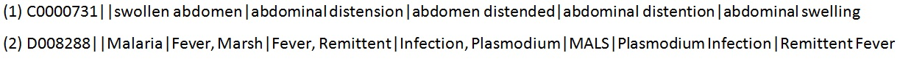

Sieve-Based Entity Linking for the Biomedical Domain
Jennifer D'Souza and Vincent Ng.
Proceedings of the 53rd Annual Meeting of the Association for Computational Linguistics and the 7th International Joint Conference on Natural Language Processing (Volume 2: Short Papers), pp. 297-302, 2015.
Click here for the
PDF version.
The talk slides are available here. Additional information about the project, including the source code of our system, is available here.
Abstract
We examine a key task in biomedical text processing,
normalization of disorder mentions.
We present a multi-pass sieve approach to this task, which has the advantage
of simplicity and modularity.
Our approach is evaluated on two datasets, one comprising
clinical reports and the other comprising biomedical abstracts,
achieving state-of-the-art results.
BibTeX entry
@InProceedings{DSouza+Ng:15b,
author = {Jennifer D'Souza and Vincent Ng},
title = {Sieve-Based Entity Linking for the Biomedical Domain},
booktitle = {Proceedings of the 53rd Annual Meeting of the Association for Computational Linguistics and the 7th International Joint Conference on Natural Language Processing (Volume 2: Short Papers)},
pages = {297--302},
year = 2015}
